Repositories
Overview
The ICGC Portal is a search tool aggregating metadata about clinical, raw and experimental data. The data is actually housed on separate repositories belonging to ICGC member projects. The Data Repositories page allows users to browse the federated metadata, providing diverse filters to help refine searches.
Once users identify the files they are interested in through the Data Portal, retrieving the actual data is a separate operation that must be performed against the data’s home repositories. In some cases, the data overlaps between repostories, but depending on the user's interests, it’s likely that downloads will need to occur from multiple repositories. While ICGC strives to consolidate as much as possible, it is an ongoing process that is subject to restrictions imposed by the governance of some data sets.
Browser
The browser is made up of multiple parts, including Filter Facets, Results, BAM statistics, Manifests, and Donor Sets.
{kind=link}
Filtering
ICGC data is filtered through the use of facets, much like Advanced Search and Projects. Users can use the facets to check off desired attributes within a project file, and all the files with that attribute will be returned. Filters within the same facet, and across multiple facets can be overlapped. The two types of filters are Donor Filters and File Filters.
Donor Filters
Donor Filters correspond to facets that will filter by the donor's attributes. These filters are used if the user is looking for donors of a certain characteristic.
| 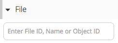 | Filter by File ID, File Name or Object ID |
| 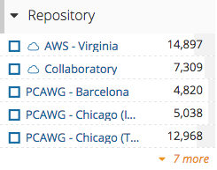 | Filter by a list of repositories |
| 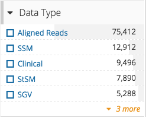 | Filter by the Data Type of the file |
| 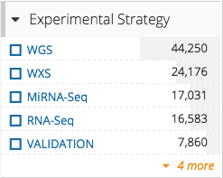 | Filter by the Experimental Strategy of the file |
| 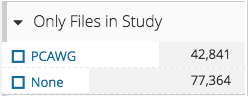 | Filter by files in certain studies |
| 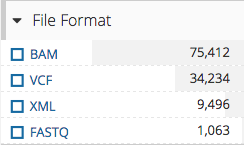 | Filter by the format of the file |
| 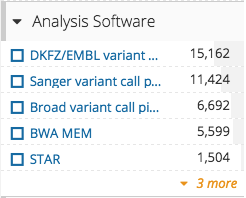 | Filter by the analysis software used |
| 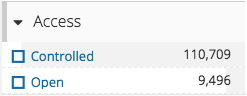 | Filter by whether or not the file is controlled |
{kind=link}
{kind=link}
{kind=link}
{kind=link}
{kind=link}
{kind=link}
{kind=link}
{kind=link}
File Filters
File Filters correspond to facets that will filter by the file's attributes. These filters are used if the user is looking for files of a certain characteristic.
| 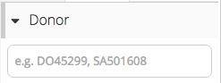 | Filter by a Donor ID |
| 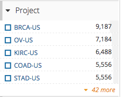 | Filter by a certain project |
| 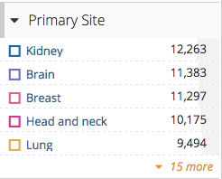 | Filter by the primary affected site of the donor |
| 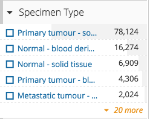 | Filter by the specimen type |
| 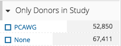 | Filter by donors in certain studies |
{kind=link}
{kind=link}
{kind=link}
{kind=link}
{kind=link}
Results
Each result that returns from the filters can be selected for more details. Selecting a file will bring you to a file entity page, which provides information on the file.
Summary
The summary section provides general information on the file.
{kind=link}
File Copies
The File Copies section provides information on the file entity, a means to download Manifest and see/download Metadata for the file.
{kind=link}
Donor
The Donor section provides information on the Donor that corresponds to the file selected.
{kind=link}
BAM Statistics
The BAM Stats section provides general information on the BAM file selected. This section is only visible if the file selected is a BAM file and the repository the file belongs in is AWS or Collaboratory
{kind=link}
Manifests
After a user has identified the project files they are interested in, using download clients will be necessary to actually retrieve the data from their host repositories. There are currently two different manifest file formats in use at ICGC; XML manifests are specific to GNOS repositories and are used by the GeneTorrent transfer client.
Tab-delimited .txt manifest files are used for files that are located in the AWS-Virginia or Collaboratory repos and are used by the icgc-storage-client.
Refer to the Cloud Guide for important details about the pre-requisites necessary to access data in the AWS-Virginia and Collaboratory cloud repositories.
A project file entity has a manifest for each repository it is hosted on, and can be downloaded on the File Copies section.
If the situation occurs where more than one file is needed, the Download manifests button can be used to download the selected files all at once. If none are selected, all the files are included. The result would be a single Manifest file for each repository, containing all the files that belonged to that repository (and selected, if applicable). 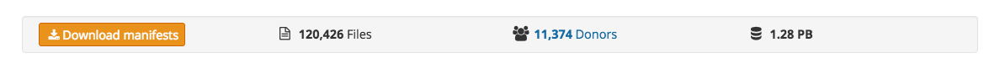 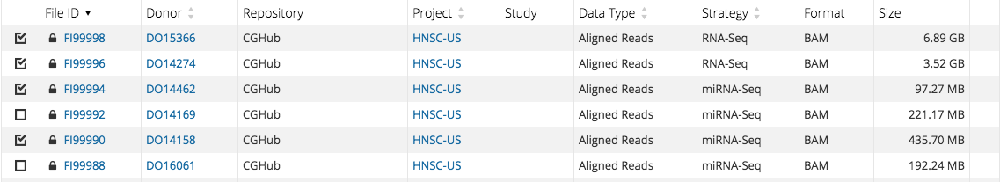 Selected 4(four) out of 7(seven) files in the same repository.
{kind=link}
{kind=link}
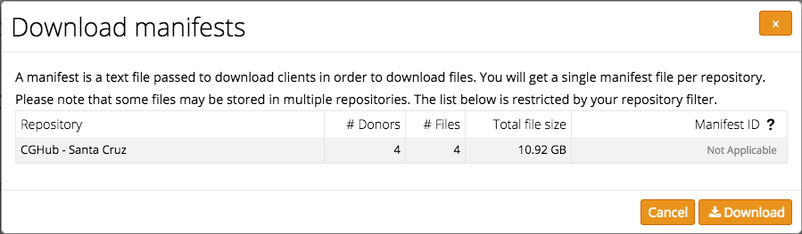 Only one Manifest file because the 4(four) files were in the same repository.
{kind=link}
Note For repositories such as Collaboratory and AWS, the Manifest ID is enough to download the requested files. For more detail on downloading these two files, click here
Donor Sets
A user has the ability to save a list of donors, using the "SAVE DONOR SET" feature. Saving a donor set allows for cross feature interaction. Once a donor set is saved, a user has the opportunity to upload it onto Advanced Search. The result is a much higher level of detail comparing the similarities of the donors.
{kind=link}
{kind=link}
A user is able to choose how many of the donors to save starting from the top down, name the donor set, and set a note.
Having trouble downloading a file from DCC Repository?
Wget: Resume Broken Download
The GNU Wget is a free utility for non-interactive download of files from the Web. It supports HTTP, HTTPS, and FTP protocols, as well as retrieval through HTTP proxies.
Use the -c or --continue option to continue getting a partially downloaded file. This is useful when you want to finish a download started by a previous instance of wget, or by another program.
The syntax is:
wget -c url
wget --continue url
wget --continue [options] url
Example: Download a file using Wget utility
$ wget https://dcc.icgc.org/api/v1/download?fn=/current/Summary/simple_somatic_...
Resume partially downloaded file:
$ wget -c https://dcc.icgc.org/api/v1/download?fn=/current/Summary/simple_somatic_...